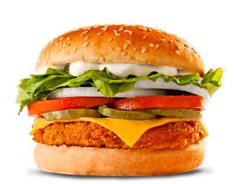

En la última década, la ciudad de El Alto ha experimentado un notable crecimiento poblacional, urbano y económico, consolidándose como una de las urbes más dinámicas del país. Esta expansión ha venido acompañada de una creciente demanda de servicios, especialmente en el sector gastronómico. La venta de comida rápida ha cobrado gran relevancia debido al estilo de vida acelerado de la población, así como a la necesidad de contar con alternativas accesibles, rápidas y variadas para el consumo diario.
En este contexto, el negocio de venta de comida rápida “Nycol”, ubicado en la zona Villa Tunari, ha logrado consolidarse como una de las opciones preferidas en su entorno. Desde su creación en el año 2002 como un modesto puesto de venta de pollo a la broaster, ha evolucionado y ampliado su oferta con productos como pollo a la broaster, pollo al espiedo, salchiarroz, hamburguesas, salchipapas, y otros, adaptándose a los gustos del consumidor alteño.
Sin embargo, a pesar del crecimiento en su clientela y menú, el sistema de atención y pedidos sigue siendo manual, lo que limita su capacidad de respuesta y organización. La presente propuesta busca desarrollar un sistema de venta y pedidos digital que permita a “Nycol” profesionalizar su gestión y responder de forma más eficiente a las exigencias del mercado actual.